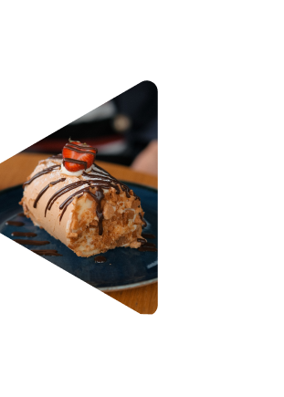
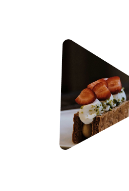
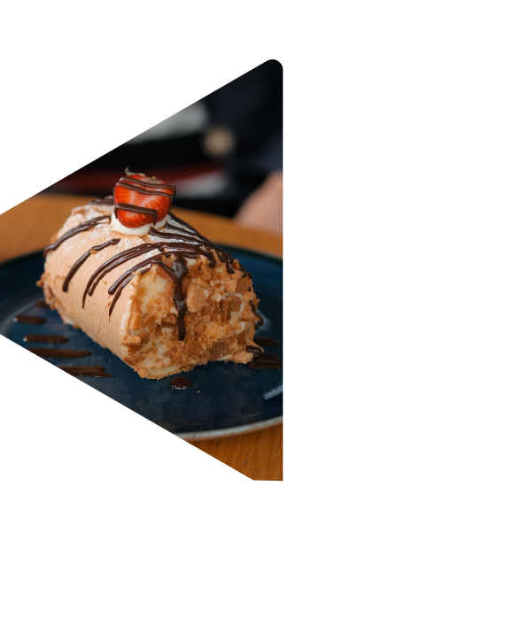
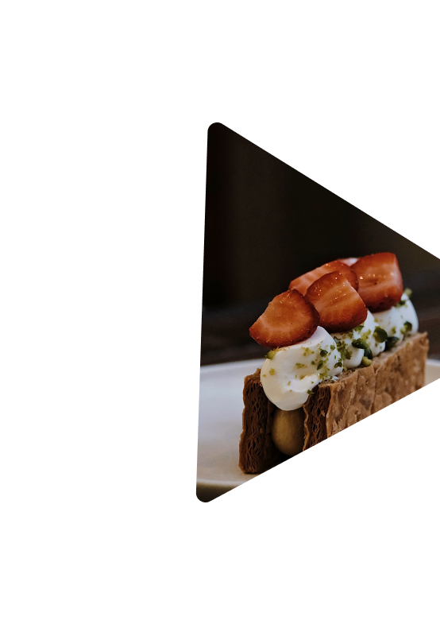

01｜草莓奶油蛋糕
Strawberry Shortcake
新鮮草莓 × 香緹奶油 × 柔軟戚風
輕盈的戚風蛋糕搭配酸甜草莓，
再覆上一層柔滑奶油，
是拾糖日和最經典的季節甜點。





每天現做的手工甜點
用季節水果、奶油與麵粉
慢慢烤出剛剛好的幸福
一點甜，一點日常。
拾糖日和沒有特別華麗的故事。
只是某一天，我們發現：
生活好像總是在趕路。
趕著完成今天還沒做完的事情。
所以我們想留下一個地方，
讓你可以坐下來，
慢慢喝一杯茶，
吃一塊剛剛好的甜點。
我們相信甜點不需要等待特別的日子。
今天想吃，就可以是值得慶祝的一天。
選擇當季食材
依照季節更換水果與甜點，
讓每一次來店裡都有一點不同。
每日少量製作，
希望每一份甜點都維持最好的狀態。
簡單的食材
不追求過度複雜的味道，
讓奶油、麵粉、水果與巧克力自己說話。
秋季栗子系列開始販售
檸檬奶霜塔重新回到菜單
中秋限定餅乾禮盒開始預購
Strawberry Shortcake
新鮮草莓 × 香緹奶油 × 柔軟戚風
輕盈的戚風蛋糕搭配酸甜草莓，
再覆上一層柔滑奶油，
是拾糖日和最經典的季節甜點。
Sea Salt Caramel Pudding
焦糖 × 牛奶 × 海鹽
微苦焦糖與濃郁牛奶交織，
最後以一點海鹽收尾，
甜而不膩。

Lemon Cream Tart
檸檬 × 奶油 × 杏仁塔皮
酥脆塔皮裡藏著清爽檸檬餡，
搭配柔軟奶霜，
酸甜之間帶著淡淡的奶香。

| 品項 | 價格 |
|---|---|
| 草莓奶油蛋糕 | NT$180 |
| 伯爵茶戚風 | NT$160 |
| 焦糖香蕉蛋糕 | NT$170 |
| 巧克力榛果蛋糕 | NT$190 |
| 品項 | 價格 |
|---|---|
| 檸檬奶霜塔 | NT$150 |
| 蘋果肉桂派 | NT$160 |
| 栗子蒙布朗塔 | NT$180 |
| 焦糖堅果塔 | NT$170 |
地址
台北市大安區日和街 18 號
🕐 11:00 — 20:00
週一公休
☎ 02-1234-5678
交通方式
捷運：
忠孝復興站 3 號出口
步行約 8 分鐘。